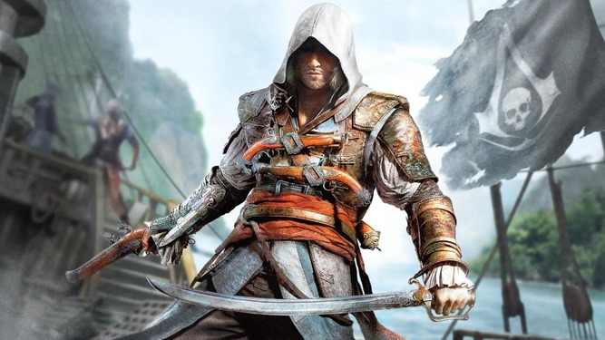
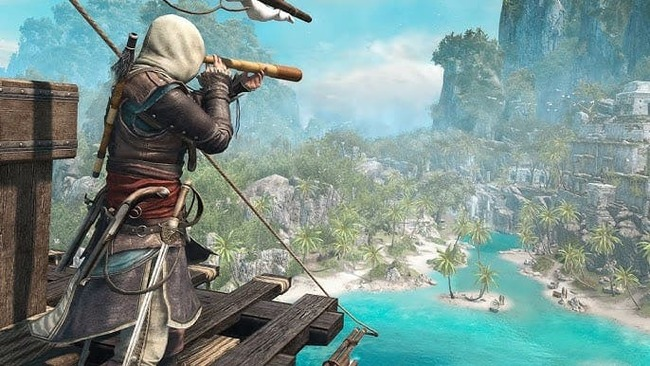

Assassin's Creed Black Flag Remake Release Date and Updates
It seems that Ubisoft plans to remake the popular and iconic game, Assassin's Creed Black Flag. In this article, we dive into the latest rumors and reports about the Assassin's Creed Black Flag remake.
The much-anticipated remake of Assassin's Creed Black Flag, which has been rumored for a long time, may arrive sooner than expected. This information comes from a recent report by well-known gaming insider Tom Henderson, published on the Insider Gaming website.
Henderson claims that while he initially thought this project was far off in the future, he has recently obtained documents indicating that the Black Flag remake is planned for release in November 2025. This date coincides with the release of Assassin's Creed Invictus, a new multiplayer experience. However, delays in the release of Assassin's Creed Shadows have affected the schedule for other titles in the series, leading to the possibility that the Black Flag remake may be pushed to 2026.
The first report on this project surfaced in June 2023 through an article on the popular website Kotaku. That report also mentioned that Ubisoft Singapore, the studio behind Skull & Bones, will play a significant role in the remake’s development. Although Skull & Bones received a poor reception, it is important to note that the game was largely based on the naval combat mechanics from Black Flag. As such, Ubisoft Singapore is still considered a suitable choice for developing this genre of games.
If you recall, the original Assassin's Creed Black Flag—the sixth installment in Ubisoft’s most successful game series—was released in October 2013 for PlayStation 3, Xbox 360, Nintendo Wii U, and PC. The game was quickly met with critical acclaim, praised for its expansive open world, improved naval battles, engaging side missions, stunning graphics, captivating storyline, and likeable characters, all set against the unique pirate theme.
The main story of the game follows the historical figure Edward Kenway, a Welsh pirate who is the grandfather of Connor, the protagonist of Assassin's Creed III. Players could freely explore the Caribbean, engage in naval battles, and even dive underwater to search for treasure. Key locations in the game included Havana, Nassau, and Kingston.